AGAS：推荐系统中的 Agent 协同虚假用户攻击评测
论文：An Efficient and Effective Agentic Group Shilling Attack on Recommender Systems。作者：Quoc Viet Nguyen、Trinh Pham、Viet Huynh、Hongzhi Yin、Quoc Viet Hung Nguyen、Bay Vo、Thanh Tam Nguyen。第一作者主要机构为澳大利亚格里菲斯大学，合作机构包括伊迪斯科文大学、昆士兰大学和越南胡志明市技术大学。论文于 2026 年 9 月 9 日公开，本文依据 v1 的完整十页原文，记录日期为 2026 年 9 月 11 日。论文入口；作者官方代码仓库已核验可访问，本笔记未执行代码。
AGAS 把虚假用户注入从一次性画像生成改为跨轮次的群体管理：一个协调者观察局部反馈，有记忆的工作者承担不同角色，研究这种自适应行为是否会同时提高目标曝光、降低画像检测效果。它是一篇推荐安全评测论文，实验采用离线迁移和重新训练协议；下文围绕研究定义、证据质量和防御评测展开。
现有攻击往往依赖针对特定目标的微调或固定用户画像模板，因而难以适应不同受害模型，或更容易被检测。
1. 背景和问题
推荐系统从用户行为中学习兴趣，也因此需要面对行为来源不可信的问题。一个点击、一条评分或一次购买记录，既可能反映真实偏好，也可能是某个主体刻意构造的训练样本。协同过滤把这些记录放入用户与物品之间的联系网络，在共享嵌入或邻域传播中形成排序信号；伪造少量用户就可能影响远多于这些账户自身的推荐列表。这与单纯篡改某个用户的展示页面不同：污染进入训练数据后，影响可能通过公共物品表征传播到未参与污染的正常用户。论文关心的是这种数据投毒中的定向推广，即让某个指定物品更频繁地进入正常用户的推荐列表。
研究对象首先需要与其他推荐安全问题区分。AGAS 没有通过修改大模型回答来诱导用户购买，也不是直接给排序模型注入恶意自然语言指令。大模型在这里承担控制角色：生成和组织虚假账户的交互行为，再由传统协同过滤模型从混入这些行为的数据中训练。评价目标仍是推荐模型对物品的排序，而不是语言模型是否执行危险指令。这种定位使论文同时涉及推荐系统和智能体，但主贡献应归到推荐鲁棒性：核心问题是共同受控的用户群如何改变学习到的偏好结构，以及检测器是否能识别这种变化。
传统方案主要从“如何生成一份有影响的画像”出发。固定规则方案围绕流行物品或给定分布采样，成本低而重复性明显；生成式方案学习正常交互分布，使伪造画像更加逼真，但可能需要针对数据或目标重新训练；基于替代模型、双层优化和强化学习的方案能利用反馈，却增加准备成本和模型假设。作者对已有方法的这些归纳属于研究动机，不能据此断言每一种实现都必须重新训练相同的次数。比较真正成立的前提，是把训练准备、候选生成和反馈成本放到同一个评测协议中核实。
近期基于语言模型的方案缓解了手工模板的限制，但一个模型替一个假用户写行为，并不自动形成群体级规划。多个代理即使共享提示词，仍可能集中评价相似物品、在类似时间推进相同目标，留下跨账户相关性。另一些方案让规划器在预生成画像库里选择，因此其适应范围受候选库约束。AGAS 的关键假设是：如果允许控制器决定群体当前目标、工作者活动状态与角色分配，就能用时间上的变化和空间上的分工改善这一限制。这里的“协同”指共同状态与共同目标下的行为分配，不能简单等同于把多个生成请求并发执行。
这也是为什么论文同时关注推荐质量与隐蔽性。传统压力测试有时以大幅破坏整体准确率证明投毒有效，但定向推广可能只改变少数排名位置，其他推荐仍然符合用户兴趣。如果只监控全站平均召回率，就可能忽略这种局部操纵。反过来，目标曝光提升也不能单独证明隐蔽：正常质量下降、异常账户可检测或者收益完全来自更大预算，都可能削弱威胁判断。本文因而需要同时看三条证据链：目标是否进入列表，真实偏好是否仍被保留，画像或群体检测是否仍然有效。三者评价对象不同，不能合并成一个笼统的成功率。
原文用二元交互矩阵描述隐式反馈。设正常用户集合为 $U$、物品集合为 $I$，$R_{ui}=1$ 表示用户与物品存在交互，正反馈集合记为 $I_u^+$。排序模型输出分数 $\hat y_{ui}=f_\Theta(u,i)$，以 BPR 成对目标训练（原文式 1）：
这里三元组由一个用户、一个有交互物品和一个无交互物品构成，训练希望前者的分数更高。推断时，原文式 2 在 $I\setminus I_u^+$ 中选择分数最高的 $K$ 个物品。过滤历史物品这一条件很关键：评价目标能否被推荐时，必须考虑目标是否已经出现在被查询账户的历史中，否则目标不出现可能只是候选过滤结果，未必表示模型没有学到关联。这也是后文用未评价目标的探测账户观察排名的原因。
假用户矩阵记为 $\widetilde R$，原文式 4 把污染数据定义为 $R'=[R;\widetilde R]$，分号表示按用户维度追加。设训练过程为 $A$，原文式 5 的目标是：
$S$ 衡量伪造画像相对正常数据的异常程度，$\varepsilon$ 是容忍界限。这是问题形式化，并不意味着控制器获得了一个可微且可精确求解的隐蔽约束。实际系统使用若干手工定义的风险、接受率和重合度信号来近似控制风险，因此论文展示的是一种启发式控制系统，而不是对约束可行性或最优攻击的证明。认识到这一点，才能合理解读“无需训练”：没有为攻击策略再拟合一个模型，不代表没有手工状态设计，也不代表实验中的受害推荐模型不需要训练。
威胁模型声称攻击方看不到已部署受害模型的参数、梯度、训练过程、测试用户身份及留出交互，也不知道精确折扣权重。可用反馈来自自己控制账户的列表。最终指标由独立正常测试用户计算，生成时的反馈只能作为代理信号。 原文把这一点落实为离线迁移协议：先构造污染数据，再用相同训练程序分别训练干净和污染模型。它能够证明特定离线条件下的迁移影响，却无法直接验证真实平台的账户认证、更新频率、数据清洗和延迟反馈。因此，全文应读成对未来防御评测的研究提示，而非真实平台可立即复现的结果。
预算还应区分可用上限与实际消耗。两种方法被允许创建相同数量账户，不代表最后都使用全部账户；注入动作达到同一上限，也不代表未被接受的尝试次数相同。因而公平性至少包含数据污染量、反馈信息量和生成资源三个维度，不能用一个“相同预算”的概括替代三者。作者的主比较锁定前一类上限，效率图补充部分资源观察，反馈的信息量则仍需要进一步报告。这些区别决定了本文可以比较哪些结果，也决定了后续压力测试需要保留哪些日志。
2. 方法
2.1 协调者汇聚反馈，显式维护个体与群体状态
AGAS 每轮先生成观察，再更新协调者记忆，然后为工作者分配角色并选择一项群体策略。经过验证的行为合为一个批次，累计进污染历史，接着更新排名和环境信号。原文算法 1 的顺序说明：反馈来自上一批已经发生的行为，控制器不能提前看到下一轮的评价结果；所有已接受交互的累计历史才是最终用于重训的数据。协调者承担的是把局部不一致信息转为全局分配的任务，工作者记忆则服务于个体行为连续性。两层记忆处理不同尺度，因而消融时应分别检查而不能用“有记忆”一笔带过。
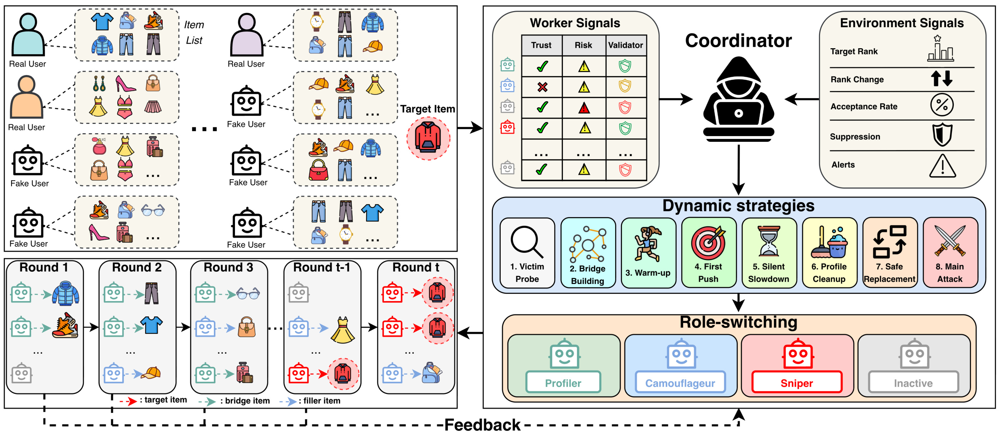
Figure 2 左上展示正常用户与假用户在物品上的交互关系，左下把同一组假用户展开到多个轮次，强调工作者并非始终保持相同职责。右上分为工作者信号和环境信号：前者回答账户自身是否可疑，后者回答整组活动是否推动了目标、是否遇到抑制。右下是策略层与角色层，两层输出重新作用于左侧交互历史，虚线反馈再返回控制器。框架的因果路径因此是“行为改变数据与反馈，反馈改变下一轮的分配”，而不是大模型直接替换受害推荐器。图中的目标物品、桥接物品和填充物品通过不同箭头区分，说明同一轮动作可能服务于曝光、探测或维持行为背景等不同目的。
这张图也暴露了方法成立的条件。协调者必须获得足够可靠的排名变化和接受情况，才能判断停滞来自模型结构、随机波动还是平台抑制；图本身没有给出这种判断的可识别性证明。工作者的信任和风险是内部状态，而非真实平台公开提供的账户信誉。图示的不同颜色表示作者定义的角色，并不证明平台能够观察到或区分这些角色。对防御研究而言，更有价值的是把这套反馈依赖显式列出：如果某些信号不可见或严重延迟，控制器的闭环可能弱化，论文目前的实验尚未系统量化这种退化。
个体层面，原文先以评分 $r_{t,w}$ 相对当前物品偏置 $b_i$ 的偏差 $d_{t,w}=|r_{t,w}-b_i|$ 更新信任与风险。式 6 至式 8 可写为：
符号解释：$\tau$ 是工作者累计信任，$\gamma$ 是内部风险，$d$ 为当前评分与物品偏置的绝对差，$\mathbf1$ 为条件成立时取一的指示函数。这些规则将“接近物品常见评价”解释成更可信，将低信任账户的极端行为解释成额外风险。不活动使内部风险回落，但不能由此推断真实系统会遗忘历史风险；这是一项建模假设。式子还显示信任没有自然衰减，而风险对静默有固定减量，两者尺度不同，不能相减后当作校准概率。原文以二元矩阵定义推荐任务，却在控制层使用评分与偏置，评分刻度、二元化过程和物品偏置的估计来源会影响这些阈值的含义，本文不替原文补出未报告的预处理设置。
全画像验证分数由式 9 定义：
其中 $e$ 衡量极端评分频率，$h$ 表示是否给目标明显正面评价，$o$ 衡量与至少另外两个假用户共有物品的比例。它试图补足只看最近一步行为的不足：一个动作可能很普通，但累计画像高度重复仍然可疑。与此同时，这个分数只是人为指定的线性代理；权重固定并不等于已经与真实检测概率校准，目标正面评价也不是独立的恶意标签。若正常用户集中评价同一热点，单靠重合度同样可能引出误判，这为后文检测器的误报分析提出了要求。
环境层面，协调者维护当前目标平均排名 $\rho(t)$ 及其变化、动作接受率 $\eta_t$、抑制状态 $\xi_t=(q_t,s_t)$ 和告警标志。原文式 10 把被丢弃动作占尝试动作比例、估计折扣幅度、目标排名改进不足比例和抑制连续轮数归一化为 $\hat d_t,\hat\delta_t,\hat m_t,\hat s_t$。前三项分别依赖动作是否纳入、每个已接受动作的折扣估计以及目标动作的排名变化；连续轮数使用 $\min(1,s_t/3)$。对尝试和目标动作数，原文用 $\max(1,\cdot)$ 避免空集合分母；折扣项直接除以已接受动作数，零接受轮次的处理在公式中未定义，需要实现说明。
原文式 11、12 用同轮活动物品集合 $A_{t,w}$ 的最大两两 Jaccard 重合度补入群体可疑分：
等权组合便于解释，却不自动解决信息来源问题。特别是折扣幅度由反馈推断，黑箱条件又排除了真实折扣权重；信号质量决定这个近似是否可信。最大重合度会被某一对账户主导，也没有单独描述活动账户少于两个时的边界。这里保留这些公式，是为了说明评测控制器如何作判断及其假设，不将其解释成适用于任意平台的规则。
2.2 有记忆的工作者与按反馈切换的策略阶段
工作者的四种角色分别承担探索、维持正常背景、目标推广和暂停。Profiler 用非目标物品交互观察环境，Camouflageur 侧重保留正常行为上下文，Sniper 承担目标相关行为，Inactive 本轮完全不产生动作。角色由协调者分配，但具体历史保存在工作者记忆中，使行为与既往状态相连接。核心设计是同一个账户可以跨轮换角色，并且“什么都不做”也是显式决策。 这种机制研究的是群体轨迹，传统一次性画像比较很难完整表达它的作用。
原文将策略分为探测、桥接、预热、首次推进，以及后续的放缓、画像清理、替换和主要推进。这些名称不应读成每次固定执行的八步脚本；每轮选择依赖当前反馈，部分阶段在特定受害者或风险状态下才有意义。嵌入模型和图模型的区别体现在物品关联的传播路径：后者可能通过共享邻域影响用户表示，因此桥接物品成为额外的控制对象。论文用反馈来粗略推断受害模型家族，这是一种启发式分类，缺少独立的家族识别准确率实验。消融显示某类策略影响结果，并不能反推分类过程总能正确辨认模型。
放缓、清理和替换解决的并非同一个问题。放缓调整整组强度以观察环境，清理限制已经可疑的画像继续贡献，替换改变承担任务的账户组合。原文还保留非活动角色来打破持续同步。对读者理解方法而言，重点是这些选择使控制系统具备不同时间尺度，而不是记住每个操作的触发阈值。已有历史会累积进入最终污染矩阵，所以文中“清理”主要指限制活动池，不能随意理解为从训练数据里删除所有历史记录；“替换”也不能被解释为可突破假用户数量预算。
这种有状态控制让攻击端对防御反应具有适应性，也带来解释困难：某项策略被移除后，剩余角色的动作数量、分布和信息量可能同时改变。因此组件消融检验的是整个控制路径被破坏后的结果，而非一种独立信号的净因果效应。若要研究防御是否真正克制了某种机制，应继续固定有效交互总量和反馈次数，记录状态转移频率及正常用户误报。本文没有把这些进一步评测当作已完成结果。
2.3 生成成本、受害者重训与实际服务推断的分界
原文复杂度使用轮数 $T$、假用户规模 $|U_f|$、每用户动作预算 $L$、受害者查询成本 $V$ 以及协调者和工作者调用成本 $c_C,c_W$：
协调者重调用量是 $O(T)$，工作者短调用量是 $O(T|U_f|)$；图模型的 $V$ 还依赖图边数、嵌入维度及传播层数。论文给出图查询约为 $O((|R|+|\widetilde R^{(\le t)}|)dK)$，嵌入模型查询约为 $O(|U_f|d)$。这里复杂度式中的 $K$ 是传播层数，而评价中的 Top-$K$ 是列表长度，含义不同。由于污染历史随轮数增长，图查询不能一律当作固定常数，实际墙钟曲线也未必线性。
“无需离线微调”指 AGAS 不再训练 GAN、双层优化器或目标特定的代理策略；已训练语言模型本身的预训练成本没有消失，受害推荐器为了评价仍需从头训练。生成阶段探测账户返回的排名只用于调整代理决策，最终正常用户指标在重训后的模型上计算，二者既不是同一账户集合，也不是同一个即时状态。把这三个阶段区分清楚，才能理解为何首次探测到目标入榜的代价可能小于完整实验总时间，亦能避免把本文报告的速度直接套到真实推荐服务的更新周期。
3. 实验结果
3.1 评测口径与长尾、热门目标的推广效果
实验使用 MovieLens-100K、MovieLens-1M、MovieLens Tag Genome 2021、Netflix Prize、Douban Movie 和 Amazon Reviews 2018，覆盖矩阵分解、神经协同过滤、图卷积与图对比学习模型。它们提供不同交互模式，但不能仅凭数据集名称推断实际抽样规模、过滤阈值或训练切分。本文十页正文没有系统表列全部数据统计、硬件和所有查询预算，因此这些复现要素仍需作者配置与原始日志补充。横跨多个数据集是外部适用性的初步证据，不能替代对每个数据集具体构建过程的核验。
比较协议在每个数据集与受害模型组合下匹配假用户预算及目标集合；智能体方法还匹配假用户累计注入动作的上限。污染数据生成后，所有受害模型按相同程序重训。同样的账户和动作上限，不等于同样的语言模型 token、相同反馈调用或相同计算成本。 效率结果因而是另一条独立比较维度。基线覆盖 RandomAttack、BandwagonAttack、AUSH、PoisonRec、PGA、GSPAttack、CLeaR、TargetedAttack，以及 AgentSA 和 AgentAttack；每类模型下的表格基线并不完全相同，不能把所有方法当作每个格子都有一次直接比较。
原文式 3/13 的目标 HR 是正常测试用户中目标进入 Top-$K$ 的比例。式 14 进一步用目标实际位置折扣：
因此两者都评价指定目标，而不是通常推荐论文里整个真实相关集合的检索效果。排名越靠前，NDCG 的贡献越大；只看 HR，无法区分排在第一位还是第十位。原文表格报告五次运行的均值与 95% 置信区间，这提供运行间波动信息，但没有替代更多目标采样、更多数据切分和原始逐次结果。置信区间较小也不自动证明实验设置完全可复现。
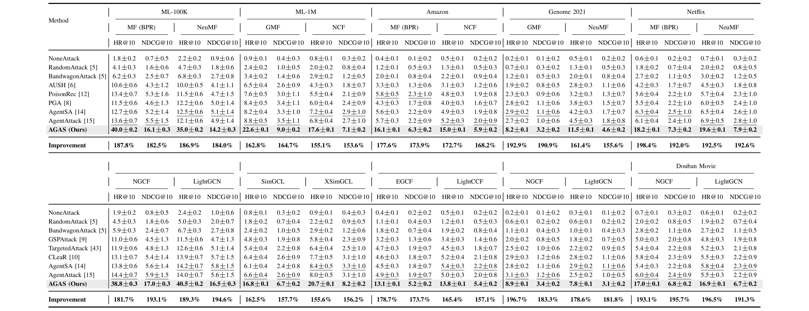
Table 1 上半为嵌入模型，下半为图模型，数据集标题下再区分受害模型与两项目标指标。所有数据统一采用乘以 $10^3$ 的展示尺度，因此 ML-100K、MF(BPR) 的 AGAS HR@10 数值 40.0 对应原始 0.040，也就是 4.00%；AgentAttack 的 13.6 对应 1.36%。按可见均值计算，绝对差为 2.64 个百分点，相对增幅约 194.12%。表内 Improvement 行却写 187.8%，不能把这一行直接作为已核验的提升结论。这个偏差在保留一位小数所允许的舍入范围下，也不容易解释为普通四舍五入。稳妥做法是保留作者原始数值，明确重算公式，并把作者提升行的分母口径标为待确认。
类似问题不只影响一个单元格：ML-100K、NeuMF 的 35.0 对可见最强基线 12.5，重算为 180.0%，而表中写 186.9%。图模型 ML-100K、LightGCN 的 40.5 对最强基线 14.2，重算约为 185.21%，表中为 189.3%。这些不一致不改变表内 AGAS 均值更高的排序事实，却使“平均提升多少”需要重新核对原始记录。跨数据集看，Amazon 嵌入 MF 的 16.1 对 5.8，对应原始 HR 从 0.58% 到 1.61%，可见收益与 ML-100K 不在同一绝对量级；Genome 的部分配置更低。不能把最大的相对提升写成所有用户、所有模型的普遍收益，更不能把 40.0 误写成四成用户被影响。
Table 1 的结构还提示一项阅读细节：下半表沿用部分上方数据集分组，末尾换为 Douban Movie，因此截图必须保留完整多层表头，而逐列解读需要沿列对齐。若只抽取一行数值，就容易把受害模型或数据集对应错。这里选择几个表头清楚的例子核对量级，其他单元格保留原图供交叉检查。主结果支持的是作者测试组合内较强的定向推广效果；表格没有给出在线流量、用户购买变化或业务收益，因此本文不把目标命中率升高转译成商业转化成功。
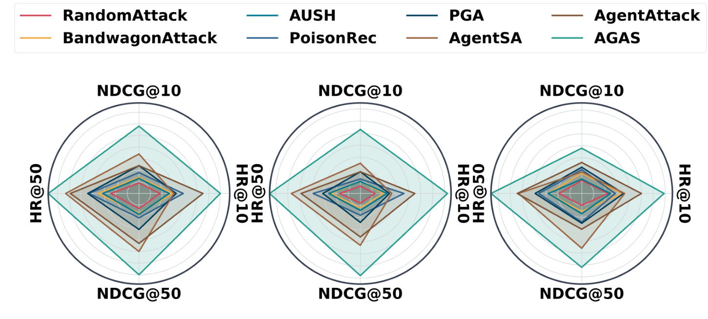
Figure 4 在三个面板中比较热门与中部目标，横向覆盖不同受害模型类型，四个方向分别对应 Top-10、Top-50 的命中与折扣排序指标。AGAS 曲线在可见轴上更靠外，支持效果并不限于长尾目标；AgentAttack 和 AgentSA 在多个轴上较接近，但仍低于 AGAS。雷达图便于检查方法排序是否一致，却没有清晰逐轴数值刻度，不能据面积比例计算提升倍数，也不能把不同指标的几何面积视为统一效用。原图没有用面板内文字完整标出每个受害模型，模型身份来自图注的排列说明，故严谨引用应保留“代表模型上的方向性比较”。这项证据补足目标流行度范围，但无法据此判断流行物品更容易还是更难被推广，因为不同流行度的基础曝光和可提升空间不同。
按问题定义，热门目标原本就更可能进入候选列表，而长尾目标可能首先受召回覆盖限制。因而相同的相对增幅不表示相同的防御压力：前者更需要核查排序位置是否被系统性提前，后者还要核查新增曝光集中在哪些用户邻域。该图未分离这些过程，结合主表能说明跨流行度的方向一致，却仍不能定位收益主要来自召回还是排序。
3.2 正常推荐保留与检测下降，是不同的隐蔽性证据
原文式 15 的正常质量评价为每位测试用户检查留出的真实物品 $i_u^{\mathrm{test}}$：
这是论文给出的单个留出物品形式，不能未加说明就换成多相关物品的全量召回。目标 HR 上升而这个指标保持较高，说明模型可能同时保留真实偏好和不正常的额外目标关联；它本身仍然不是“无损”的证明。为了说明这种共存，作者先提供嵌入可视化，再比较正常质量和检测器。
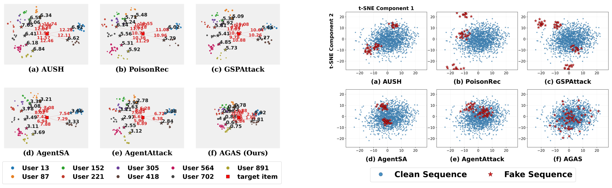
Figure 3 左侧展示若干用户、目标及其原有相关物品的几何关系，黑色与红色距离分别帮助读者看原有偏好是否被破坏、目标是否接近用户。AGAS 面板的两类距离较小，作者据此解释目标被拉近的同时用户仍留在原偏好区域。右侧把正常历史画成蓝点、假历史画成星形，AGAS 的假历史更分散并与正常云团重叠，部分其他方法则形成较紧的簇。这两个视角分别对应单用户偏好保留和全局画像分布，避免把“目标更近”误当作“画像更正常”。
但 t-SNE 是低维投影，局部邻域和远距离并不能无损代表原始高维空间。不同面板若分别拟合投影，其坐标尺度和距离更不应直接横比；图中也未充分报告不同随机种子或投影超参数下的稳定性。图里视觉上的散开只能作为机制直觉，不能替代检测召回、误报率或者分布距离的统计检验。尤其“星形更分散”不一定总意味着更隐蔽：过于离散也可能异常，是否重合取决于真实画像分布。本文把这张图作为与主指标一致的定性证据，而不赋予它独立证明不可检测的能力。
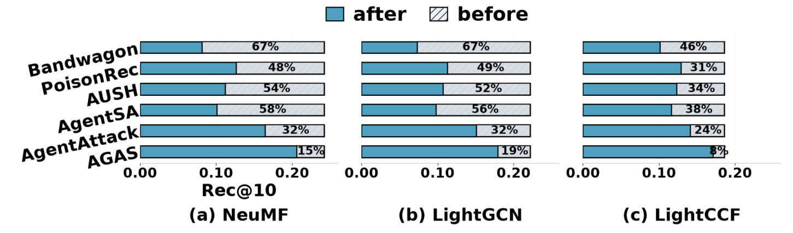
Figure 5 的蓝条显示污染后正常推荐质量，灰色部分表示相对 NoneAttack 上界的缺口。AGAS 的蓝条在三组模型中最接近未攻击上界，说明它相对比较基线更少扰动正常推荐。可是图中仍分别标出 NeuMF 约 15%、LightGCN 约 19%、LightCCF 约 8% 的相对缺口，因此“保持正常质量”应写成更好保留，而不是完全没有代价。这些百分比在灰色缺口上，不能读成蓝条的绝对召回率或攻击检出率。基线 AgentAttack 的缺口分别约为 32%、32%、24%，可见差异有实际方向性；不过不同模型的横轴上界不同，不能仅比较蓝条像素长度判断哪一种模型更稳健。整体平均召回较好，仍可能掩盖特定人群的损失，这张图没有提供用户分层或长期反馈结果。
此外，平均召回保留还可能与目标推广集中度同时变化。若影响只集中在少量本来就容易接受目标的用户，整体召回的下降可以较小，而局部用户看到的列表已经明显改变。原图没有展示用户级差值分布，也没有给出目标推广与真实物品丢失之间的逐用户对应关系。因此将这种结果用于质量监控时，应保留分群观察，而不能仅设一个全体平均召回阈值。
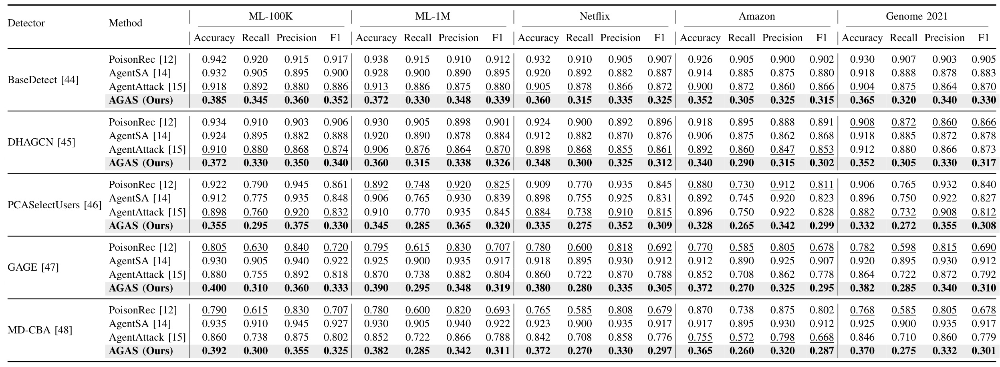
Table 2 包含 BaseDetect、DHAGCN、PCASelectUsers 三类画像或结构检测器，以及 GAGE、MD-CBA 两类群体检测器。以 ML-100K 的 BaseDetect 为例，AgentAttack 的准确率、召回率、精确率和 F1 分别为 0.918、0.892、0.880、0.886，AGAS 对应 0.385、0.345、0.360、0.352；GAGE 的 AgentSA F1 为 0.922，AGAS 为 0.333。可见作者报告的不只是某一个传统离群点方法失效，群体检测结果也显著降低。四项指标的对象是检测器对假用户的分类，不是目标曝光，因此下降在这里意味着检测质量下降，与前面 HR 的方向正好相反。
检测准确率降到约三至四成不能直接解释为“六至七成假账户成功躲过检测”。 这个补数混合了假阴性与假阳性，必须知道正负类比例、正类定义、阈值与评估采样。若实际假用户只有少量，始终预测正常的准确率也可能很高；论文四个数字显示的是某种测试构成下的分类结果，正文没有充分交代是否平衡采样及阈值如何选择。ML-100K 的 0.345 召回与 0.360 精确率所对应的调和均值约为 0.352，与表中 F1 一致，说明该行至少满足这一局部算术关系；但这不补齐类别比例，也无法据此恢复完整混淆矩阵。由这些值推出某真实平台的漏检人数属于证据越界。
更公平的防御评测需要在固定正常用户误报率下比较攻击检出率，并报告阈值扫描和校准集。群体方法还要说明一个账户属于多个群组时如何计数，以及检测前后是否重新训练推荐模型。目前 Table 2 反映既有检测设置遇到 AGAS 时的性能下降，没有证明重新训练或加入时序证据的检测器仍然同样失效。论文让“群体适应性”成为值得检验的新条件，但新攻击的出现并不意味着原有防御已在所有设置下失去作用。
3.3 策略、组件和骨干的消融能说明什么
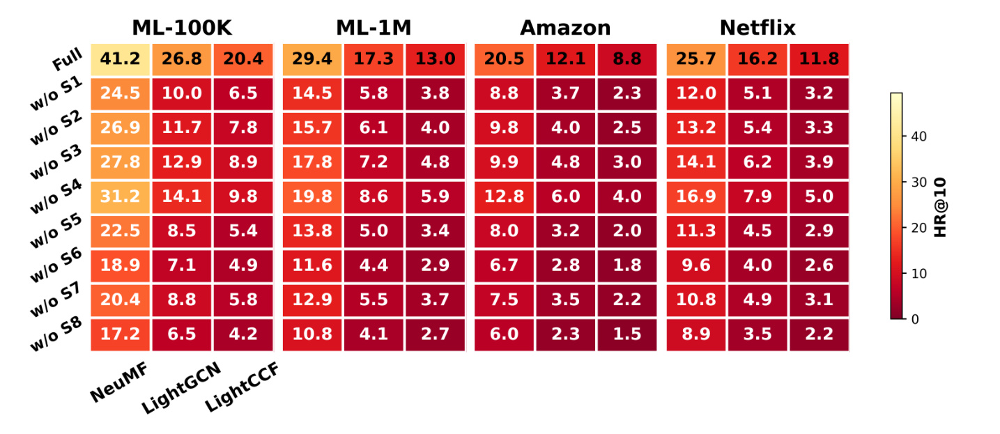
Figure 6 将完整配置与去除八项策略逐一比较，数据集下的列对应 NeuMF、LightGCN、LightCCF。以 ML-100K 第一列为例，完整值为 41.2，移除第六项画像清理为 18.9，移除第八项主要推进为 17.2；图模型列也出现较大下降。这与“推进能力和风险管理共同贡献效果”的解释一致。桥接策略在图受害者上的下降更明显，符合邻域传播机制，但横跨不同基线水平时应同时看相对降幅，不能只用绝对数字大小判断策略依赖。原图颜色条标为 HR@10，却使用大于 1 的显示数值，缺少如 Table 1 那样清楚的倍率注记；本文沿用图示数值比较差异，不把 41.2 解释成原始概率。消融只展示单项去除，没有给出策略间交互项或等动作量重分配，因而不能据此断言各项收益可加。
这里还可以按同一受害模型比较两种删减：在电影小数据集的神经协同过滤列，去掉首次推进对应数值为三十一点二，去掉主要推进则为十七点二；前者仍有后期推进路径，后者切断持续累积目标影响的阶段。这能解释两项名称相近但消融退化不同，并说明早期一次推进并不能代替后续整个过程。再看同组图模型列，移除清理的值也低于移除首次推进，提示可疑账户的持续使用可能抵消先前积累的收益。不过这些仍是沿完整系统作删除的观察，不能确认清理本身直接改善了推荐器表征；它可能通过改变可接受动作的数量与后续角色可用性间接起作用。若要把机制解释得更扎实，需要同步报告各变体有效交互量、被丢弃比例和风险状态占用时间，才能区分信息不足、动作不足和策略错误。这些过程变量没有在当前热图中出现，因此本笔记保留“与机制解释一致”的表述，不把颜色差异当作完整因果证明。
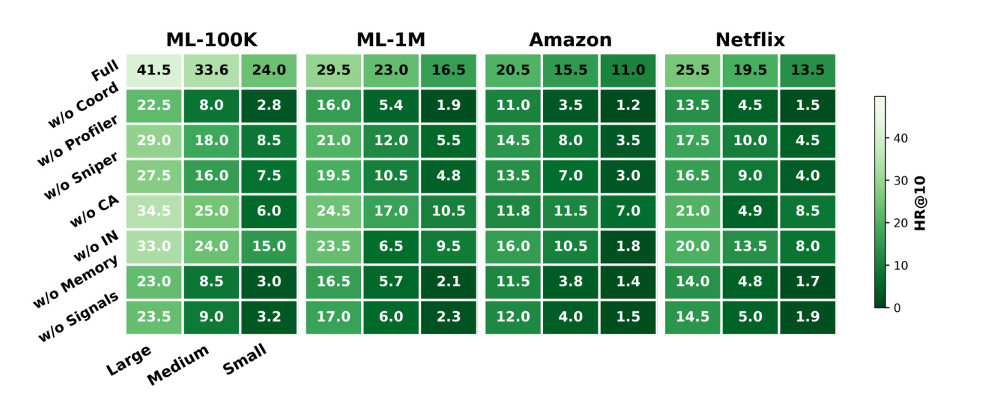
Figure 7 进一步按语言模型规模分组，移除协调者、Profiler、Sniper、Camouflageur、Inactive、记忆或显式信号。ML-100K 小模型完整配置为 24.0，去协调者为 2.8，去记忆为 3.0，去信号为 3.2；大模型对应完整 41.5，去协调者 22.5。这表明小模型更依赖外围的状态管理与任务组织，不能只用参数规模预测系统行为。对于防御研究，这意味着一个较弱的单体模型仍可能在结构化工具和记忆帮助下形成较强群体行为。与此同时，“大、中、小”包含模型能力、提示跟随和服务实现差异，图中无法将参数量的因果效应与模型家族分开。个别角色删除后不同数据集退化并不完全平滑，进一步说明不能把各组件当作独立可移植模块，亦不能据三档结果拟合可信的缩放规律。
从消融对象看，去协调者会同时拿走跨工作者的汇总决策，去记忆会拿走历史上下文，去显式信号则让当前决策缺少结构化状态。三者都可能使小模型难以根据稀疏反馈维持稳定行动，因此它们并不是三个内容互不重叠的功能开关。大模型在删除之后仍保留更多效果，可以有多种解释：更好的推断能力、对提示的遵从，或者对当前上下文的利用；原图没有把这些因素分别测量。另一个值得注意的对照是暂停角色：移除它会改变可活动工作者集合和群体同步程度，未必改变每一个账户的画像真实性。图里只给目标命中指标，尚不足以确认该组件的收益究竟来自规避抑制还是更有效地分配动作预算。为此，后续应将同一变体的目标指标与检测器表现并列，并检查正常用户误报是否同时改变。只有保持总交互量和模型调用上限可比，才能把不同组件的收益解读为系统结构带来的额外价值，而不是更多有效资源。
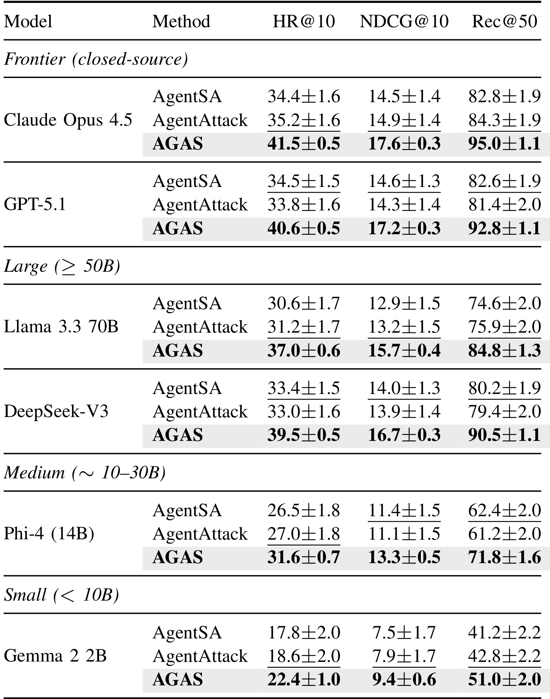
Table 3 把 Claude Opus 4.5、GPT-5.1、Llama 3.3 70B、DeepSeek-V3、Phi-4 14B 和 Gemma 2 2B 分组比较。Claude 组中 AGAS 的 HR@10 为 41.5，AgentAttack 为 35.2；依表注乘以千倍的展示尺度，原始值分别是 0.0415 和 0.0352，差为 0.63 个百分点。Gemma 组分别为 22.4 与 18.6，原始差为 0.38 个百分点。每个骨干组 AGAS 都在所报指标上更好，支持框架收益不只由某一个更强模型带来。它还报告 Rec@50，与 Figure 5 的 Rec@10 不同，不能把两个位置截断的正常质量直接拼成同一指标曲线。
这张表的局限在于模型分层标签并不等价于相同推理预算：闭源与开源模型的请求长度、采样设置、延迟和 token 单价并未在表里统一。DeepSeek-V3 的总参数与每 token 激活参数也不是同一概念，不能仅凭其归在大模型一栏就判断成本顺序。跨骨干的均值差异展示“换骨干后仍然有效”的方向，却没有提供部署性价比排名所需的完整条件。默认配置、数据集聚合方式和评价模型对应也需要与公开代码记录进一步对齐，因此本文不把 Table 3 的最佳数值与 Table 1 某格硬视为同一实验运行。
正常推荐列与目标推广列的共同变化尤其需要谨慎。表中更强骨干下，两类指标通常一起提高，说明语言模型升级可能同时改善行为背景与目标相关选择；但没有单独报告控制器和工作者分别使用何种骨干的交叉实验，无法判断能力主要由哪一层贡献。若仅替换控制器就取得大部分收益，系统成本结构会与全体工作者一起升级明显不同，当前表格无法作出这种选择。另一项限制是置信区间：五次运行给出了每个均值周围的波动，却没有说明各方法是否使用相同目标和配对随机条件。比较两个均值的区间宽窄只能提供直觉，不能替代配对差值的区间或显著性检验。因此这张表适合支持跨骨干的一致排序，而不适合据几个很接近的模型数值判定能力名次。本文保留全部骨干与正常推荐列，是为了让读者看到系统效果随基础模型改变的趋势，同时避免将一种骨干的低成本结论直接转移到另一种骨干。
3.4 轮数、总时长与首次命中成本必须分别核算
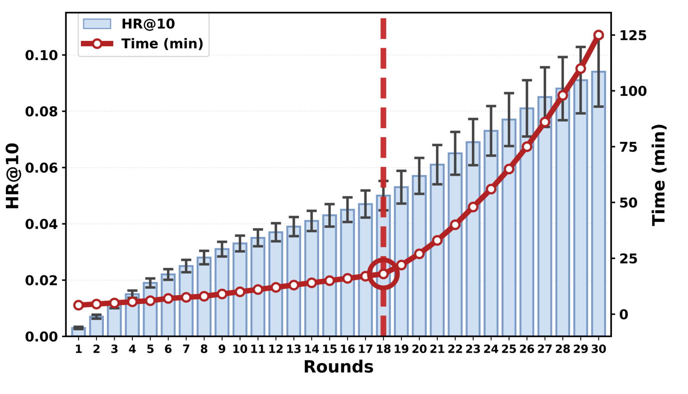
Figure 8 左轴是 HR@10，右轴是分钟，横轴从一轮到三十轮。蓝柱随轮数上升，红线在后期增长明显变快；作者用竖线标记第十八轮，作为默认预算折中。图中第十八轮约在 0.05 的 HR 附近，而三十轮接近 0.10，说明停止在十八轮并不是已经达到性能饱和。作者更强调后续代价增加，且置信区间稍有扩大。读图时不能把右轴分钟当成蓝柱误差条，也不能把十八轮称作理论最优点。它只是当前配置下的经验选择，缺少等预算下不同停止策略的直接比较；如换用更慢的反馈系统，最合适的轮数也可能改变。图中的误差条是命中率的置信区间，并没有同时展示时间变异，因此无法用这张图判断尾部延迟。后期更大的绝对区间也不必然意味着更差的相对稳定性，应同时对照均值与重复次数。若要选择截止轮次，需要先指定质量门槛或总时间上限，再用独立目标评估这项选择。
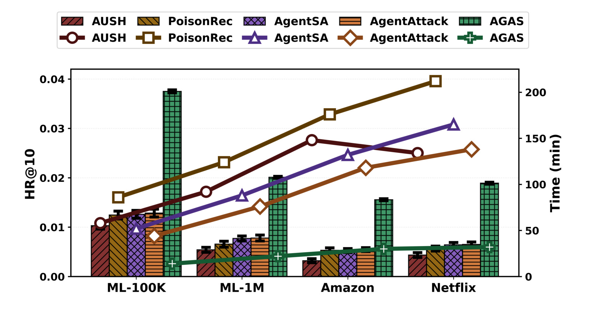
Figure 9 将柱状命中率与折线总运行时间同时放在一张双轴图里。四个数据集上，AGAS 的柱子更高，而时间折线位于较低位置，支持这套实验中较好的效果与成本组合。图上其完整时长大致从十几分钟到三十余分钟变化，正文用“约二十四分钟”概括时应理解为研究报告的量级，不是每个数据集相同的精确计时。对 AUSH、PoisonRec 等方法，总时间中存在训练准备；对 AgentAttack 则可能包含候选库生成与替代模型过程。这些成本是否缓存、是否按单目标摊销、是否计入所有 API 重试，会显著改变实际对比。本文保留作者图示的方向，而不从一张双轴图推断所有部署环境里固定的加速倍率。双轴的视觉距离也没有统一单位；较低的时间折线与较高的效果柱，只能分别读数后讨论成本收益，不能用两者交叉位置作为某方法更优的数值依据。
这也说明不同数据集之间的时长变化未必只由样本量决定：图结构、查询实现以及生成回复长度都会进入实际耗时。缺少这些分项日志时，应把当前结果视为特定运行配置的观测，不用于外推每增加一个用户的固定时间成本。
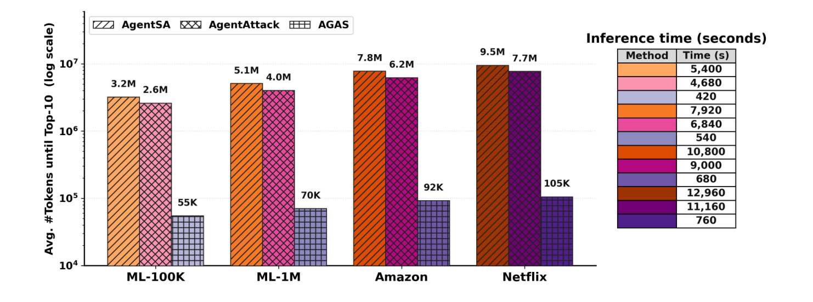
Figure 10 的 token 柱明确统计目标首次进入 Top-10 之前的平均累计用量，纵轴为对数尺度。AGAS 在 ML-100K、ML-1M、Amazon、Netflix 上分别标为 55K、70K、92K、105K；AgentAttack 对应约 2.6M、4.0M、6.2M、7.7M。仅按这些图示数值计算，首次命中 token 比值约为四十七倍到七十三倍，反映此前生成大量候选画像的开销可能相当大，但它不是同 token 预算下的效果实验。最末一个数据集已超过十万 token，故“几万 token”只能粗略描述部分设置，精确记录应保留各数据集不同用量。
右侧小表给出与图注对应的首次命中秒数，其中 AGAS 行按数据集顺序为 420、540、680、760 秒，即约 7、9、11.3、12.7 分钟。原图的 Method 栏使用颜色而没有可见文字，辨认依赖左侧配色与行次，引用时必须同时保留整张原图。这些秒数显著小于 Figure 9 的完整总时间并不必然矛盾，因为统计终点不同：首次命中之后还可能继续执行其他轮次，最终数据又要用于完整评价。要判断“全流程节约了多少”，必须使用同样终止条件，不能将 Figure 10 的 token 比值与 Figure 9 的总时间相乘。正文近似二十四分钟与右表首次命中秒数也不应混写成同一次事件的两个单位表达。
首次命中统计还留下一个重要缺口：对于在预算内从未达到目标的运行，token 和时间是否截尾、排除或记为预算上限，原文未明确交代。只有成功运行的均值可能偏向容易目标，反而低估整体尝试成本；即使所有运行最终成功，也应报告成功数量和目标集合。这里不否认图中比较，而是把它限定为作者所报首次命中均值。若将该系统作为防御压力测试基线，合理的进一步指标是给定预算内达成比例、全运行成本分布以及未命中运行的截尾规则。
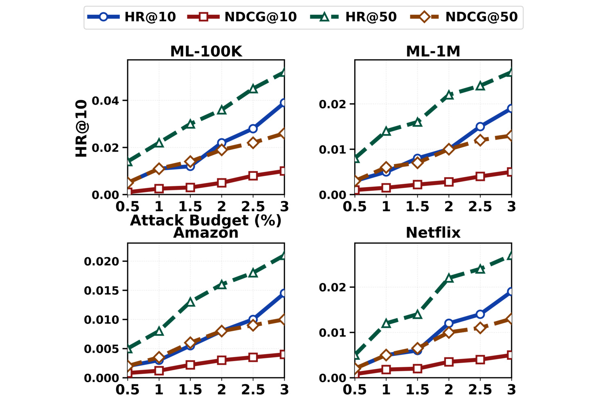
Figure 11 横轴是注入假用户占正常用户总量的比例，从 0.5% 增长至 3.0%，并非每账户动作数、token 限额或攻击成功率。四个面板同时展示 HR@10、NDCG@10、HR@50、NDCG@50；曲线整体随规模增大而升高，其中 HR@50 自然不低于 HR@10，因为列表更长。Amazon 的绝对指标普遍低于 ML-100K，提示数据关联结构和目标难度影响可达曝光。图中“预算增加带来更大影响”也意味着需要严格固定预算才能比较方法；它不能单独证明工作者协同随规模变得更高效，因为多用户本身就提供更多交互和覆盖机会。每个面板纵轴范围不同，视觉斜率不可直接跨数据集比较，原图也未给全部点的置信区间，因而不宜据相邻点的小波动推断临界规模。
将这些效率结果放在一起，最有证据的判断是：当前离线协议中，AGAS 在较少画像生成与策略训练准备下取得较高目标推广，且成本可由轮数和假用户量调节。更强的判断——例如真实平台的端到端墙钟时间、统一价格下的经济成本，或者有限查询情况下的可扩展性——都需要独立实验。原文复杂度的调用次数与 Figure 8 的非线性墙钟增长并不冲突，但两者也不能互相替代：前者是一组参数化上界表达，后者包含模型服务、图查询和状态积累的具体运行代价。
4. 总结
AGAS 最值得记录的贡献是把推荐投毒的评测单元从孤立假画像提升为有反馈、有记忆、会改变行为分工的群体过程。它没有提出新的协同过滤主干，而是组织多个智能体，让推荐数据污染在多个轮次里累积，再检查这种历史对不同受害模型的迁移影响。在作者的表内结果中，目标曝光提升、正常推荐相对保留、传统检测效果降低和生成成本下降形成了互相呼应的证据链。对推荐团队而言，直接启发是现有鲁棒性测试需要把账户之间与时间之间的依赖纳入，而不能只比较若干固定画像模板。
但结论应停留在证据支持的位置。第一，离线生成后重训与真实平台持续学习不同，反馈延迟、数据有效期及认证机制可能改变可行性。第二，同账户与动作上限没有锁定总 token、查询次数和缓存成本，速度优势仍依赖比较边界。第三，Table 1 的部分提升行无法从可见最强基线复算，需要作者原始运行记录确认，当前更可靠的是单元格均值与展示倍率。第四，Table 2 没有充分交代类别比例和检测阈值，因此不能把低准确率直接变成账户逃逸比例。第五，图中的正常质量仍有明显缺口，t-SNE 也只提供定性解释。第六，信号近似和风险衰减来自内部建模，不能理解为真实平台公开提供的可信风险状态。
这些限制并不让论文失去研究价值，而是改变后续工作该如何排序。最先需要的是复现证据整理：逐目标、逐随机运行保存正常质量、目标指标、计算成本和原始混淆矩阵，统一表内提升的分母，同时列清楚评分到隐式交互的转换。其次应检验反馈的真实性：在授权的隔离数据环境里加入延迟、缺失和噪声，观察控制器是否仍能根据局部探测判断状态，确认收益来自真实适应而非过于便利的模拟反馈。再次应把防御方也纳入适应过程，在固定正常用户误报率下重新训练检测器，增加时序群体特征，再考察目标操纵是否仍然持续。
对于实际推荐系统设计，可以从这篇论文提炼出一个具体的评测组合：目标曝光的异常增加、正常推荐的分群损失、可疑行为的跨轮关联以及固定误报率下的检出表现。它比只监控单账户评分极端程度更接近作者描述的威胁，但不能据本文直接宣布哪种检测特征一定有效。每项防御信号都需要在正常热门事件、兴趣趋同和真实代理代办场景中检查误伤，否则加强群体相关检测可能损害合法行为。这也是把安全研究转成工程评测时必须保留的双向目标：既测模型抵抗操纵的能力，也测正常用户被错误限制的代价。
本文最终支持的研究判断是，智能体的组织方式可能显著改变传统推荐攻击与检测的相对结果，而没有明显破坏整体推荐质量，并不足以说明训练数据没有被操纵。下一步更有价值的验证不是继续寻找更大的单一提升数字，而是补齐协议、算术和检测口径，再在受控条件下测试反馈失真与自适应防御。只有这些证据补齐后，才能判断 AGAS 在其他模型、其他用户结构和更严格成本约束下仍有多大影响范围。